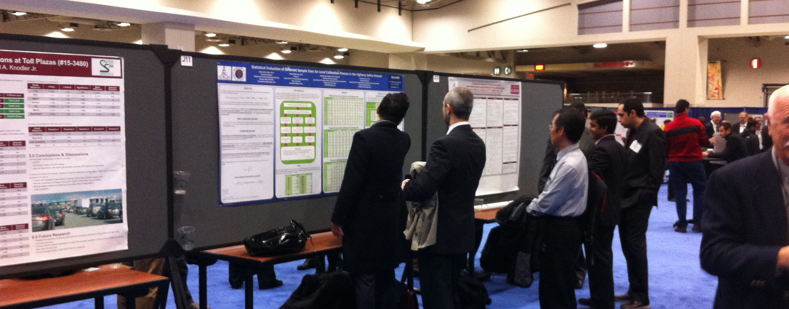

最近の研究
最近の研究成果のリストです．業績の詳細については，CV（和文）をご覧ください．
最近の研究業績リスト

2027年
原著論文
1.
国際学会発表等
1. Mori, H., Ishibe, M., Tsuchiya, T., Fukuda, D., Maruyama, T., Otazawa,
T., Kato, H. (2027). Estimations of values of travel time saving and reliability
of road traffic: A case study in Kita Kanto subregion, Japan. Transportation
Research Board 106th Annual Meeting (accepted).
2. Asakura, J., Uchiyama, Y., Setthasuravich, P., Kato, H. (2027). Mobility
app fragmentation and travelers’ route-search behavior: Smartphone-based
experiment in Bangkok, Thailand. Transportation Research Board 106th Annual
Meeting (accepted).
3. Toe, T. T. P., Takeda, S., Tran, H. T., Kato, H. (2027). User preferences
of sidewalk space allocation between pedestrians versus vendors: A stated
choice analysis in Hanoi, Vietnam. Transportation Research Board 106th
Annual Meeting (accepted).
国内学会発表等
1.
総説等
1.
著書等
1.
2026年
原著論文
1. Thongnak, N., del Barrio Alvarez, D., Setthasuravich, P. Kato, H. (2026).
Urban rail transit, economic activity, and land development: A spatial
difference-in-differences analysis of the Bangkok Metropolitan Region.
Applied Geography, Vol. 198, 104235.
2. Setthasuravich, P., Sirikhan, K., Chalermpong, S., Thaithatkul, P.,
Uchiyama, Y., Irawan, M. Z., Del Barrio Alvarez, D., Kato, H. (2026). A
meta-synthesis of the big data in urban transportation planning processes.
Cities, Vol. 179, 107632.
3. Widiastuti, N. O., del Barrio Alvarez, D., Kato, H. (2026). Rethinking
sustainable mobility: Global evidence on associations of digitalization
with energy and environment in transportation sector. Transportation Research
Record: Journal of the Transportation Research Board (accepted).
4. Tsuchiya, T., Alves, L. B. O., Hussain, B., Kato, H. (2026). Does road
investment reduce average travel time and travel time variability? Empirical
evidence from Japan. Research in Transportation Economics, Vol. 118, 101806.
5. Silva, J. H., Kato, H. (2026). A cross-country analysis of the influence
of road infrastructure on human development. Transport Policy, Vol. 186,
104246.
6. Emoto, S., del Barrio Alvarez, D., Setthasuravich, P., Chalermpong,
S., Thaithatkul, P., Irawan, M. Z., Kato, H. (2026). Urban informal transportation
and gentrification: Empirical evidence from motorcycle taxi in Bangkok,
Thailand. Transportation Research Part A: Policy and Practice, Vol. 211,
105068.
7. Widiastuti, N. O., Irawan, M. Z., Kato, H., Chalermpong, S. (2026).
Flexible vs. exclusive passengers: Who shows greater loyalty to public
transport, and which attributes matters? Journal of Public Transportation,
Vol. 28, 100164.
8. Hidayat, H. R., Aurarisa, I., Irawan, M. Z., Kato, H., Chalermpong,
S., Thaithatkul, P., Del Barrio Alvarez, D. (2026). Post-adoption travel
behavior and modal substitution of electric motorcycles: Evidence from
Jakarta, Indonesia. Asian Transport Studies, Vol. 12, 100187.
9. Irawan, M. Z., Rizki, M., Belgiawan, P. F., Joewono, T. B., Kato, H.
(2026). Transition to electric motorcycle-based ride-hailing: User heterogeneity,
perception, and pro-environmental habit. Travel Behaviour and Society,
Vol. 43, 101180.
10. Setthasuravich, P., Kato, H. (2026). Confronting policy myopia: Short-term
government policy and information-seeking behaviors in rural Thailand.
Review of Policy Research, Vol. 43, No. 1, pp. 1-40.
11. Maharjan, R., Kato, H., Choi, S. (2026). Willingness to implement logistics
and supply chain resilience strategies amid COVID-19: Insights from Japanese
manufacturing firms. Logistics, Vol. 10, 65.
12. Sagawa, M., del Barrio Alvarez, D., Alves, L. B. O., Kato, H. (2026).
Impacts of BRT introduction on local economy in a developing city: Case
study in Brasilia. Transportation Research Record: Journal of the Transportation
Research Board, Vol. 2680, No. 6, pp. 1-18.
国際学会発表等
1. Hussain, B., Nakano, M., Kato, H. (2026). Seasonal analysis of traffic
accident severity: Evidence from Japan’s nationwide crash data. Transportation
Research Board 105th Annual Meeting, Washington D.C. (U.S.), January 2026.
2. Widiastuti, N. O., del Barrio Alvarez, D., Kato, H. (2026). Rethinking sustainable mobility: Global evidence on associations of digitalization with energy and environment in transportation sector. Transportation Research Board 105th Annual Meeting, Washington D. C. (U. S.), January 2026.
3. Ong, Y. S., Shibayama, T., Kato, H. (2026). Synergistic effects of access
to high-speed rail and airports on local land prices: A case study of Hokuriku
Shinkansen, Japan. The 17th World Conference on Transport Research – WCTR
2026, Toulouse (France), July 2026.
4. Yang, H-P., del Barrio Albarez, D., Kato, H. (2026). Station plaza and land prices in the surrounding area: Case study in Tokyo Metropolitan Region, Japan. The 17th World Conference on Transport Research – WCTR 2026, Toulouse (France), July 2026.
5. Thaithatkul, P., Uchiyama, Y., Chanyotha, A., Tuengphun, P., Kato, H.,
Irawan, M. Z., Lohatepanont, M., Chalermpong, S. (2026). From knowledge
to intention: The taxi transition to EVs in developing countries. The 17th
World Conference on Transport Research – WCTR 2026, Toulouse (France), July 2026.
国内学会発表等
1.
総説等
1. 加藤浩徳 (2026).［平成期における我が国の交通運輸・観光政策］第6章 国際，運輸政策研究，Vol.28，pp.68-82.
著書等
1. 運輸総合研究所編(2026).「平成期の交通運輸・観光政策」，時事通信社（共著）．
2．山縣宣彦，加藤一誠編著(2026).「みなと」のインフラ学－PORT2030の実現に向けた処方箋－（増補版） ，成山堂書店（共著）．
2025年
原著論文
1. Uchida, K., Okunobo, N., Thongnak, N., Kato, H. (2025). Airport system development and urban development: Scenario analysis in the Tokyo Metropolitan Area. Transportation Research Interdisciplinary Perspectives, Vol. 34, 101763.
2. Yamada, S., Sakshita, A., Tsuchiya, T., Kato, H. (2025). Average travel
speed and traffic accident risk: Evidence from nationwide data for trunk
highways and expressways in Japan, IATSS Research, Vol. 49, pp. 425-435.
3. Hoang-Tung, N., Thuy, L. H., Viet, T. N., Kato, H. (2025). Traffic congestion
and ride-hailing booking: Evidence from Hanoi, Vietnam. Journal of Transport
Geography, Vol. 129, 104422.
4. Gouto, R., Kato, H. (2025). Maintenance and repair costs of passenger
vehicles with different powertrains: Case study with vehicle owner survey
in Japan. Transportation Research Interdisciplinary Perspectives, Vol.
34, 101648.
5. Firmansyah, D., Irawan, M. Z., Rizki, M., Amrozi, M. R. F., Kato, H., Chalermpong, S.,
Thaithatkul, P., del Barrio Alvarez, D. (2025). Exploring the transition
to electric motorcycles and its role in multimodal travel in the Jakarta
Metropolitan Area. Discover Sustainability, Vol. 6, 952.
6. Nagashima, F., Kato, H. (2025). Impact of One Tambon One Product program
on household income in Thailand. Journal of Entrepreneurship in Emerging
Economies, Vol. 17, No. 6, pp. 1611-1635.
7. Hoang-Tung, N., Me Ko, M. M., Tuan, B. V., Takeda, S., Kato, H. (2025).
Is service quality sufficient to attract users to toll roads in Hanoi,
Vietnam? International Journal of Intelligent Transportation Systems Research,
Vol. 23, pp. 1509-1523.
8. Endo, M., Kato, H. (2025). Impacts of stay-at-home policy under the
pandemic on post-pandemic economic activities: Global evidence from major
cities. Sustainable Cities and Society, Vol. 130, 106559.
9. Kanai, Y., Wetwitoo, J., Kato, H. (2025). Meta-analysis on indirect
impacts of highway investment: Evidence from Japan. Transportation Research
Record: Journal of the Transportation Research Board, Vol. 2679, No. 2,
pp. 991–1002.
10. Vinh, H. C., Tung, N. H., Murakami, J., Kato, H. (2025). Development
impact of airport capacity expansion with city-airport expressway connection
in Asias emerging economies: Evidence on nighttime light intensity from
Ha Noi. Transport Policy, Vol. 171, pp. 63-77.
11. Oum, T. H., Wang, K., Yu, C., Coppola, P., Castagna, L., Kato, H.,
Le, Y., Luo, X., Gan, S., Kim, K., Kim, W., Patil, G., Gaur, V., Circella,
G., Mhiuddin, H., Lecompte, M. C., Lim, C. (2025). Key findings, lessons
learned, management strategy and policy issues investigated: The WCTRS
global subway efficiency benchmarking task force inaugural report. Transport
Policy, Vol. 162, pp.353-363.
国際学会発表等
1. Kato, H., Izawa, J., Inoue, M., Gautam, S., Sarli, P. W. (2025). Challenges
of civil engineers in Asia: Review of ACECC’s declarations and technical
committees’ activities. The 10th The Civil Engineering Conference in the
Asian Region (CECAR 10), Jeju (Korea) (accepted).
2. Bhatt, A., Kato, H. (2025). High-speed rail development and industrial
innovation: Evidence from manufacturing sector of Japan. Presented at the
16th Conference of Eastern Asia Society for Transportation Studies (EASTS
2025), Surakarta (Indonesia), September 2025.
3. Hussain, B., Parzinger, G., Isomoto, K., Nakano, M., Kato, H. (2025).
Injury severity of traffic accident in Japan’s metropolitan areas: Hotspots
analysis in Tokyo, Nagoya, and Osaka. Presented at the 16th Conference
of Eastern Asia Society for Transportation Studies (EASTS 2025), Surakarta
(Indonesia), September 2025.
4. Tsujimoto, H., Suzuki, J., Shimamoto, S., Fukasaku, K., Omori, T., Tsuchiya,
T., Otaka, G., Kato, H. (2025). Improving the efficiency of land-sea connection
at container port terminals. Presented at the 16th Conference of Eastern
Asia Society for Transportation Studies (EASTS 2025), Surakarta (Indonesia),
September 2025.
5. Hidayat, H. R., Aurarisa, I., Irawan, M. Z., Kato, H., Chalermpong,
S., Thaithatkul, P., Del Barrio Alvarez:, D. (2025). The role of electric
motorcycles in transforming travel behavior and mode choice preferences.
The 16th International Conference of Eastern Asia Society for Transportation
Studies (EASTS 2025), Surakata (Indonesia), September 2025.
6. Fillone, A., Chalermpong, S., Thaithatkul, P., Kato, H. (2025). A comparison
of access and egress characteristics to and from rail stations in Bangkok
and Metro Manila. The 16th International Conference of Eastern Asia Society
for Transportation Studies (EASTS 2025), Surakata (Indonesia), September 2025.
7. Thaithatkul, P., Tuengphun, P., Widiastuti, N. O., Chalermpong, S.,
Fillone, A., Kato, H. (2025). Two feet or a motorcycle seat? The race to
Bangkok's urban rail. The 16th International Conference of Eastern Asia
Society for Transportation Studies (EASTS 2025), Surakata (Indonesia), September 2025.
8. Ochsner, M., Greenham, S., del Barrio Alvarez, D., Kato, H. (2025).
On track to climate resilience? Insights from Japanese railways. The 16th
International Conference on Advanced Systems in Public Transport (CASPT2025),
Kyoto (Japan), July 2025.
9. Le, Y., Takasaki, Y., Kato, H. (2025). Impact of introducing scenic
trains on local railway ridership: Evidence from Japan. Transportation
Research Board 104th Annual Meeting, Washington D. C. (U. S.), January
2025.
10. Thongnak, N., Alvarez, D. B., Kato, H. (2025). Effects of urban rail
transit on the local economy and land use in the Bangkok Metropolitan Region.
Transportation Research Board 104th Annual Meeting, Washington D. C. (U. S.), January 2025.
11. Fan, J., Kato, H., Li, T., Liu, X., Li, Y., Lu, J. (2025). Effects
of high-speed railway on regional accessibility and poverty alleviation
in China considering regional heterogeneity. Transportation Research Board
104th Annual Meeting, Washington D. C. (U. S.), January 2025.
12. Uchida, K., Okunobo, N., Thongnak, N., Kato, H. (2025). Effects of
airport system development on urban development: simulation analysis in
the Tokyo Metropolitan Area. Transportation Research Board 104th Annual
Meeting, Washington D. C. (U. S.), January 2025.
国内学会発表等
1.
総説等
1.加藤浩徳(2015). 移動にはどのような価値があるのか―交通の時間価値とマルチタスキング，ていくおふ，No.179，pp.5-12．
著書等
1.Adachi, H., Kato, H. (2025). Interurban business travel amidst COVID-19:
Insights from a nationwide survey in Japan, Research Handbook on Transport
and COVID-19 (eds. by Zhang, J., Jiang, Y., and Hayashi, Y.), Research
Handbooks in Transport Studies series, Edward Elgar Publishing.
2. Bhatt, A., Kato, H., Kurosaki, F. (2025). High-speed rail development
in Japan, Handbook of Transport in Asia (ed. by He, S.), Research Handbooks
in Transport Studies series, Edward Elgar Publishing.
2024年
原著論文
1. Irawan, M. Z., Rizki, M., Belgiawan, P. F., Joewono, T. B., Chalermpong,
S., Thaithatkul, P., Kato, H. (2024). Heterogeneity in activity and travel
mode patterns of older Indonesians. Transportation Research Interdisciplinary
Perspectives, Vol. 26, 101159.
2. Setthasuravich, P., Sirikhan, K., Kato, H. (2024). Spatial econometric
analysis of the digital divide in Thailand at the sub-district level: Patterns
and determinants. Telecommunications Policy (accepted).
3. Denfanapapol, S., Setthasuravich, P., Rattanakul, S., Pairoh, N., Pukdeewut,
A., Kato, H. (2024). The digital divide, wealth, and inequality: An examination
of socio-economic determinants of collaborative environmental governance
in Thailand through provincial-level panel data analysis. Sustainability,
Vol. 16, 4658.
4. Kato, H., Sanko, N., Ishibe, M., Sakashita, A. (2024). Value of travel
time savings for leisure trips in autonomous vehicles: Case study from
the Tokyo Metropolitan Area. Transportation Research Interdisciplinary
Perspectives, Vol. 24, 101080.
5. Hoang-Tung, N., Kato, H., Hoang, T. L., Hoang, V. C., Phan, L. B., Takeda,
S. (2024). Ride-hailing service availability and private transportation
mode usage in a motorcycle-based city: Evidence from Hanoi. Transportation
Research Interdisciplinary Perspectives, Vol. 24, 101069.
6. Uchida, K., Kato, H., Murakami, J., Takeuchi, W. (2024). Does new airport
investment promote urban economic development?: Global evidence from nighttime
light data. Transportation Research Part A: Policy and Practice, Vol. 180,
103948.
7. Guo, J., Kato, H. (2024). Role of government equity investment in capital
structure of project finance: Global evidence from PPP projects in developing
countries. Journal of Construction Engineering and Management, Vol. 150,
No.3 (DOI: https://doi.org/10.1061/JCEMD4.COENG-1396).
8. Guo, J., del Barrio-Alvarez, D., Yuan, J., Kato, H. (2024). Determinants
of the formation process in public-private partnership projects in developing
countries: Evidence from China. Local Government Studies, Vol. 50, No.
3, pp. 521-544.
9. Chalermpong, S., Thaithatkul, P., Hoang-Tung, N., Fillone, A., Kato, H. (2024). Impacts of Ride-Hailing Applications on Sustainable Mobility in Asian Cities: Bangkok, Hanoi, Manila. Journal of Eastern Asia Society for Transportation Studies, Vol. 15, pp.3455-3474.
10. Fillone, A., Chalermpong, S., Thaithatkul, P., Hoang-Tung, N., Kato,
H. (2024). Use of ride hailing services in Bangkok, Hanoi, and Metro Manila:
A comparison of gender preferences. Journal of the Eastern Asia Society
for Transportation Studies, Vol. 15, pp. 3437-3454.
11. Maharjan, R., Kato, H. (2024). Can logistics and supply chain resilience
strategies minimize the impacts of disruptions? Evidence from Japan. International
Journal of Logistics Management, Vol. 35, No. 5, pp.1465-1482.
12. Adachi, H., Kato, H. (2024). Interview-based analysis on impacts of COVID-19
on interurban business trips in Japan. Transportation Research Record:
Journal of the Transportation Research Board, Vol. 2678, No.12, pp.1-12.
13. Arai, Y., Kato, H., Diaz, C. E. D. (2024). How flood risk, accessibility
and zonal household income affect residential property rental prices: Evidence
from Metro Manila. Journal in Urban and Regional Planning, Vol. 8, No.
1, pp.32-44.
国際学会発表等
1. Endo, M., Kato, H. (2024). Global evidence on impacts of urban restriction
under Pandemic on recovery. Associate of Collegiate Schools of Planning
(ACSP) Annual Conference 2024, Seattle (U. S.), November 2024.
2. Nakaniwa, Y., Tagawa, H., Kawasaki, T., Kato, H. (2024). The relationship
between maritime network features and regional economy: A global analysis.
Presented at IAME 2024 Conference, Valencia (Spain), June 2024.
3. Sagawa, M., Alvarez, D. B., Alves, L. B. O., Kato, H. (2024). Impacts
of BRT introduction on local economy in a developing city: Case study in
Brasilia. Transportation Research Board 103rd Annual Meeting, Washington
D.C. (U.S.), January 2024.
4. Kanai, Y., Wetwitoo, J., Kato, H. (2024). Meta-analysis on indirect
impacts of highway investment: Evidence from Japan. Transportation Research
Board 103rd Annual Meeting, Washington D.C. (U.S.), January 2024.
5. Gouto, R., Sakashita, A., Alves, L, B. O., Hussain, B., Kato, H. (2024).
Revisiting vehicle operating costs in Japan: Considering new vehicle technologies
in cost-benefit analysis for road projects. Transportation Research Board
103rd Annual Meeting, Washington D.C. (U.S.), January 2024.
6. da Silva, j. H., Kato, H. (2024). Road infrastructure and human development:
A cross-country analysis. Transportation Research Board 103rd Annual Meeting, Washington D.C. (U.S.), January 2024.
7. Wetwitoo, J., Kanai, Y., Otazawa, T., Kato, H. (2024). Impact of introducing
ring-road expressway on land value in suburban area: Empirical evidence
from Tokyo. Transportation Research Board 103rd Annual Meeting, Washington D.C. (U.S.), January 2024.
国内学会発表等
1. 高崎祐紀，楽奕平，加藤浩徳 (2024). DID分析による地方鉄道における観光列車導入効果の検証に関する研究，第69回土木計画学研究発表会・春大会．
2. 新田裕樹，前田郁，奥ノ坊直樹，瀧優花，栁沼秀樹，加藤浩徳(2024). 鉄道駅改良事業の事後評価手法に関する研究 東京メトロ千代田線北綾瀬駅を事例として，第69回土木計画学研究発表会・春大会．
総説等
1. 加藤浩徳 (2024). 投稿論文に対する編集委員会委員長の講評，運輸政策研究，Vo.26，p.4．
2. 加藤浩徳，森川想 (2024). 駅前広場と公共交通指向型都市開発，運輸政策研究，Vol.26，pp.80-82．
著書等
1. Kato, H., Chalermpong, S.(2024). Digital Transport Platforms and Urban Mobility:
Ride Hailing Applications in Southeast Asia, Routledge Studies in Transport
Analysis, Routledge, an imprint of Informa UK Limited trading as Taylor
and Francis Group.
2023年
原著論文
1. Morikawa, S., Aoyama, M., Kato, H. (2023). Development of railway station
plazas: Impact on land prices in surrounding areas. Transport Policy, Vol.
142, pp.1-14.
2. Maharjan, R., Kato, H. (2023). Enhancing resilience of global logistics
and supply chains: Perspectives from impacts of the COVID-19 pandemic on
Japanese companies. Logistics, Vol. 7, No. 2, 27.
3. Sunio, V., Kato, H., Gaspay, S. M., Napalang, M. S. (2023). International
transfer of railway infrastructure through the intermediation of aid agencies.
Transportation Research Interdisciplinary Perspectives, Vol. 18, 100765.
4. Thaithatkul, P., Chalermpong, S., Laosinwattana, W., Liang, J., Kato,
H. (2023). Car versus motorcycle ride-hailing applications: user behaviors
and adoption factors in Bangkok, Thailand. Case Studies on Transport Policy,
Vol. 11, 100950.
5. Thaithatkul, P., Chalermpong, S., Laosinwattana, W., Liang, J., Kato,
H. (2023). The relationship between RHA Use and car purchases: Trends emerging
in Bangkok, Thailand. Asian Transport Studies, Vol. 9, 100095.
6. Chalermpong, S., Kato, H., Thaithatkul, P., Ratanawaraha, A., Fillone,
A., Nguyen, T. H., Jittrapirom, P. (2023). Ride-hailing applications in
Southeast Asia: A literature review. International Journal of Sustainable
Transportation, Vol. 17, No. 3, pp. 298-318.
国際学会発表等
1. Maharjan, R., Kato, H. (2023). Willingness of private businesses to
implement logistics and supply chain resilience strategies in Japan. The
16th World Conference on Transport Research, Montreal (Canada), July 2023.
2. Adachi, H., Kato, H. (2023). COVID-19 and interurban business trips:
Evidence from nationwide survey in Japan. The 16th World Conference on Transport Research, Montreal (Canada), July 2023.
3. Uchida, K., Kato, H., Murakami, J., Takeuchi, W. (2023). Do airport rail link projects contribute to local economic development in fast-growing megacities? Evidence from Jakarta, Indonesia. Transportation Research Board 102nd Annual Meeting, Washington DC (U. S.), January 2023.
4. Saito, Y., Kato, H., Chalermpong, S., Thaithatkul, P. (2023). Regulations
for ride-hailing services and its operation under the competition with
informal motorcycle taxi services: Case study in Bangkok, Thailand. Presented
at the 15th International Conference of the Eastern Asia Society for Transportation
Studies, Shah Alam (Malaysia), September 2023.
5. Vu, D. B. O., Kato, H., Takeda, S., Phan, L. B. (2023). Impacts of congestion
charging on light-truck goods delivery in Hanoi, Vietnam. Presented at
the 15th International Conference of the Eastern Asia Society for Transportation
Studies, Shah Alam (Malaysia), September 2023.
6. Hoang-Tung, N., Linh, H. T., Tan, N. V., Kato, H. (2023). Associations
of spatiotemporal patterns in ride-hailing cars usage with traffic congestion,
urban characteristics, and Covid-19 pandemic in Hanoi. Presented at the
15th International Conference of the Eastern Asia Society for Transportation
Studies, Shah Alam (Malaysia), September 2023.
7. Morichi, S., Kato, H., Fukuda, D., Ito, M., Kaiya, A., Nitta, H., Shimada,
Y., Niikura, A., Takeshima, A., Haruna, H., Kobayashi, W., Shimamoto, S.
(2023). Japan’s Public Transportation Strategy in 2050. Presented at the
15th International Conference of the Eastern Asia Society for Transportation
Studies, Shah Alam (Malaysia), September 2023.
国内学会発表等
1.
総説等
1. 加藤浩徳 (2023).公共交通とホームレス，運輸政策研究，Vol.25，pp.70-71．
2. 加藤浩徳(2023). 投稿論文に対する編集委員会委員長の講評，運輸政策研究，Vol.25，p.5．
3. 加藤浩徳(2023). 鉄道インフラ維持管理の現在とこれから，andE，Vol.13，pp.6-7．
4. 加藤浩徳(2023). インターネットがもたらす旅の楽しみ，運輸総研だより，Vol.8, p.1.
著書等
1. 山縣宣彦，轟朝幸，加藤一誠編著(2023). 「空のみなと」のインフラ学―未来の空港・航空システムを語る，成山堂書店（共著）．
2022年
原著論文
1. Fan, J., Kato, H., Liu, X., Li, Y., Zhou, L. (2022). High-speed railway
development, inter-county accessibility improvements, and regional poverty
alleviation: Evidence from China. Land, Vol. 11, No. 10, 1846.
2. Liu, J., He, M., Schonfeld, P. M., Kato, H., Li, A. (2022). Measures
of accessibility incorporating time reliability for an urban rail transit
network: A case study in Wuhan, China. Transportation Research Part A:
Policy and Practice, Vol. 165, pp. 471-489.
3. Iida, A., Nguyen, T. M. C., Phan, L. B., Kato, H. (2022). Property value
capture for development of mass rapid transit: Case study from Hanoi. Asian
Transport Studies, Vol. 8, 100084.
4. Setthasuravich, P., Kato, H. (2022). Does the digital divide matter
for short-term transportation policy outcomes? A spatial econometric analysis
of Thailand. Telematics and Informatics, Vol. 72, 101858.
5. Phun, V. K., Pheng, P., Kato, H., Yai, T. (2022). Influence of COVID-19
pandemic on old-style LAMAT services in Developing Cities of Asia: The
case study of Phnom Penh. Asian Transport Studies, Vol. 8, 100080.
6. Maharjan, R., Kato, H. (2022). Resilient supply chain network design:
A systematic literature review. Transport Reviews, Vol. 42, No. 6, pp.
739-761.
7. Thaithatkul, P., Chalermpong, S., Laosinwattana, W., Kato, H. (2022).
Mobility, activities, and happiness in old age: Case of the elderly in
Bangkok. Case Studies on Transport Policy, Vol. 10, No. 2, pp. 1462-1471.
8. Irawan, M. Z., Rizki, M., Chalermpong, S., Kato, H. (2022). Mapping the motorcycle-based ride-hailing users in Yogyakarta: an analysis of socio-economic factors and preferences. Asian Transport Studies, Vol. 8, 100073.
9. Miwa, N., Bhatt, A., Morikawa, S., Kato, H. (2022). High-speed rail
and the knowledge economy: Evidence from Japan. Transportation Research
Part A: Policy and Practice, Vol. 159, pp. 398-416.
10. Hoang-Tung, N., Linh, H. T., Cuong, H. V., Binh, P. L., Takeda, S.,
Kato, H. (2022). Ride-hailing service adoption and local context in motorcycle-based
societies: Case study in Hanoi, Vietnam. Sustainability, Vol. 14, No. 2,
728.
11. Le, Y., Oka, M., Kato, H. (2022). Efficiencies of the urban railway
lines incorporating financial performance and in-vehicle congestion in
the Tokyo Metropolitan Area. Transport Policy, Vol. 116, pp. 343-354.
12. Miwa, N., Bhatt, A, Kato, H. (2022). High-speed rail development and
regional inequalities: Evidence from Japan. Transportation Research Record:
Journal of the Transportation Research Board, Vol. 2767, No. 7, pp. 363–378.
13. Fan, J., Kato, H., Zhang, Y., Li, Y. (2022). Effects from expanding
high-speed railway network on regional accessibility and economic productivity
in China. Transportation Research Record: Journal of the Transportation
Research Board, Vol. 2767, No.4, pp. 145-160.
国際学会発表等
1. Maharjan, R., Kato, H. (2022). Investigating the implementation of logistics
and supply chain resilience strategies in Japanese companies before and
during COVID-19 pandemic. The 9th International Conference on Transportation
and Logistics (T-LOG 2022), Incheon (South Korea), September 2022.
2. Mizuno, H., Kato, H., Murakami, J., Taniguchi, K. (2022). Impacts from improvement
of ground rail accessibility to/from city airport to local economies: Case
study of Tokyo, Japan, AASLE 2022 Conference, Tokyo (Japan), December 2022.
3. Uchida, K. Kato, H., Murakami, J., Takeuchi, W. (2022). Does new airport
investment promote urban economic progress?: Global evidence from nighttime
light imagery. The 25th Air Transport Research Society (ATRS) World Conference,
Antwerp (Belgium), August 2022.
4. Maharjan, R., Kato, H. (2022). Can logistics and supply chain resilience
strategies minimize the impacts of disruption of firm performance?: Evidence
from the impacts of the COVID-19 pandemic on Japanese companies. The 26th
International Symposium on Logistics (ISL 2022), Cork (Ireland), July 2022.
5. Setthasuravich, P., Sirikhan, K., Kato, H. (2022). Spatial econometric
analysis of the digital divide in Thailand at the sub-district level: Patterns
and determinants, The 31st European regional conference of the International
Telecommunications Society, Gothenburg (Sweden), June 2022.
国内学会発表等
1.
総説等
1. 加藤浩徳(2022). 親の死に目と国土，計画・交通研究会会報，Nov. 2022，p.16．
2. 加藤浩徳(2022). 新型コロナ禍に対して公共交通計画のできることはなにか，運輸政策研究，Vo.24，pp.48-49．
3. 加藤浩徳(2022). 皆様からの積極的な投稿をお待ちしております，新編集委員長からのメッセージ，運輸政策研究，Vol.24，p.183．
著書等
1. Kato, H., Murakami, J. (2022). Developing Airport Systems in Asian Cities:
Spatial Characteristics, Economic Effects, and Policy Implications, Asian
Development Bank.
CV（和文）｜教育（講義等）｜社会的貢献｜最近の研究｜研究内容の紹介｜その他